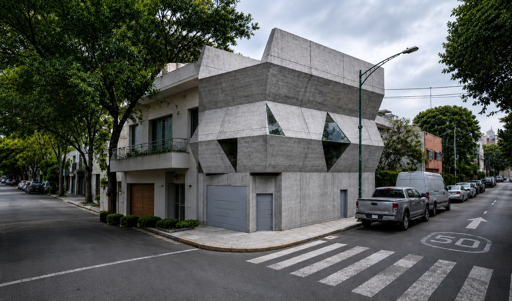
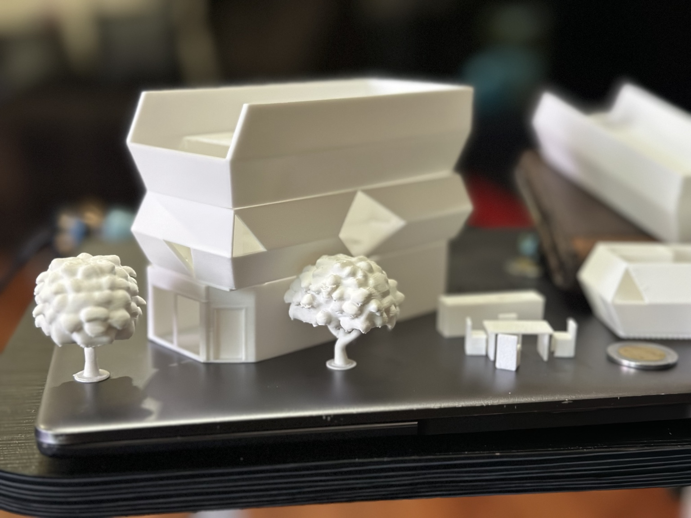
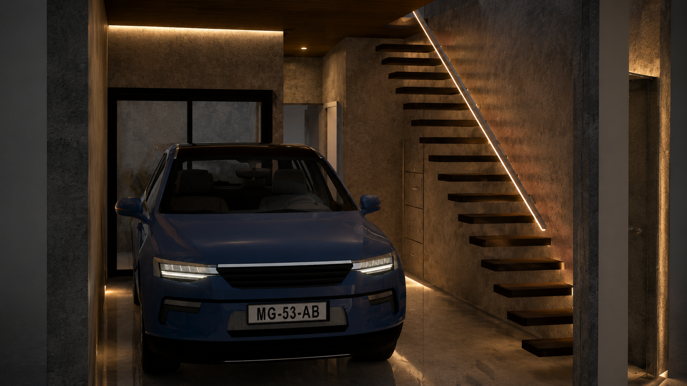
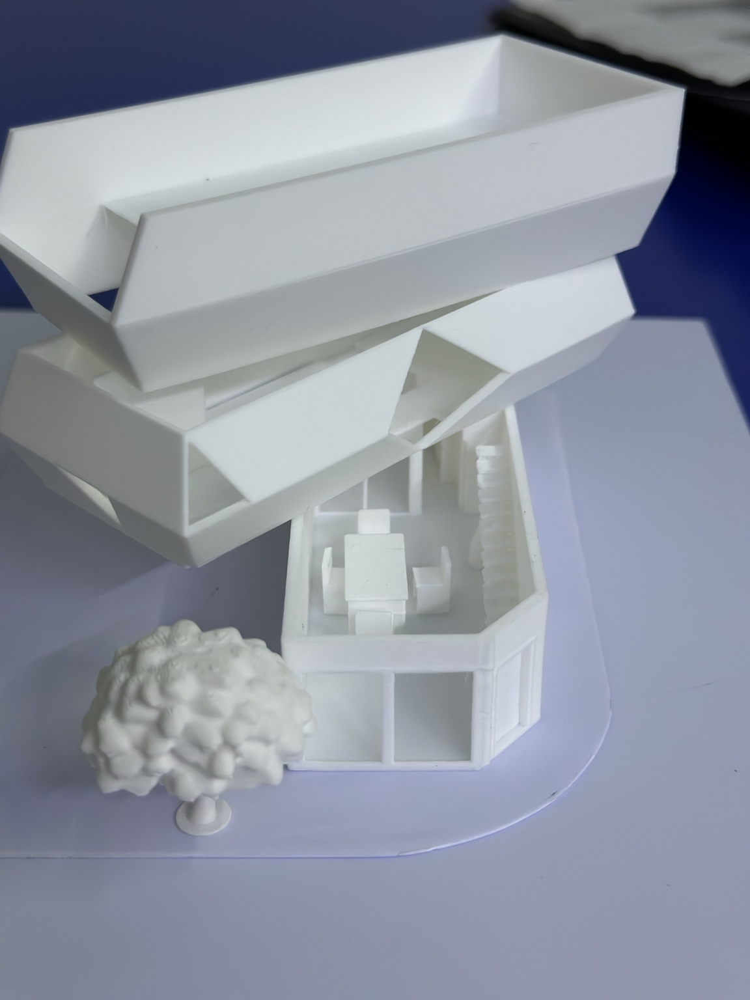

01 / Filtros
La planta baja funciona como transición entre ciudad, cochera, oficina y acceso privado.
Casa IGO entiende la arquitectura como una secuencia de filtros espaciales que separan gradualmente el ámbito público del privado.
Ver proyecto
El proyecto se desarrolla en un predio compacto de esquina. La fachada trabaja con volúmenes inclinados, concreto aparente y ventanas triangulares que permiten entrada de luz natural sin exponer completamente el interior.
La planta baja funciona como transición entre ciudad, cochera, oficina y acceso privado.
Los triángulos no son decoración: son vacíos controlados dentro de una masa monolítica.
Concreto aparente, texturas sobrias, portón tipo zaguán y una lectura urbana cerrada.

La composición final evita una fachada plana: cada nivel trabaja con diferente profundidad, generando sombras, ritmo y una presencia urbana más sólida.
El acceso de Casa IGO funciona como un filtro entre el espacio urbano y el ámbito privado. El concreto aparente, la madera y la iluminación indirecta generan una atmósfera cálida dentro de una envolvente monolítica.


Visualización tridimensional de Casa IGO. Arrastra para rotar, desplaza para hacer zoom y explora la volumetría, los vacíos triangulares y la relación de la fachada con la esquina.
Clic + arrastrar para rotar · Scroll para zoom
La vivienda-taller responde a la necesidad de integrar actividad profesional y vida privada en un predio reducido. La planta baja concentra el contacto con la ciudad mediante cochera, acceso controlado y área de atención; los niveles superiores funcionan como espacios de transición y resguardo. La fachada se plantea como una masa de concreto perforada por aperturas triangulares, reforzando la idea de orden geométrico, privacidad e iluminación natural.